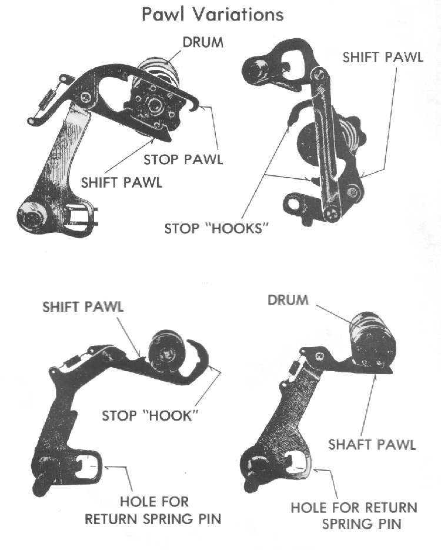
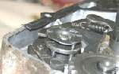

The shift pawl is a small hooked arm or ratchet on the end of the gear lever shaft. Each time the lever moves, the pawl turns the shift drum one step. A spring then pulls the pawl back to its middle position, and the lever returns to centre.
What it does
The pawl must turn the drum by the same step every time, up or down, and then let go. Pressing the lever down turns the drum one way, pulling it up turns it the other way. The pawl pushes on pins on the drum, or on a ratchet in the end of the drum, depending on the engine.
To stop the drum from turning on its own, a spring-loaded stopper (a wheel, an arm with a roller, or a plunger with a rounded head) rests in grooves or holes on the drum. It moves out of the groove as the drum turns and drops into the next one. Check your manual, because the details differ between makers.
Signs it is worn or failing
- Gear lever does not spring back: a broken or weak return spring.
- Missed gears, false neutrals or a lever that goes down but does not engage the gear: worn pawl, weak spring or a worn pin.
- Gear changes that feel loose or sloppy, or a stopper arm that does not click firmly.
- Gear lever loose on its shaft, which is a separate fault on the spline.
When to replace it
The course notes that this is not a high wear item. Replace the pawl, the stopper arm or its spring only when they are bent, cracked, rounded or weak. On some engines the pawl position can be adjusted: loosen the lock nut, set the pawl to the centre position, and tighten the lock nut again. Use the method in your manual.
What to match when buying
- Engine model and year. Pawls, return springs and stopper arms look alike but differ in shape.
- Buy the pawl, springs and pins together as a small kit if the engine has high mileage.
Fitting notes
- Check the lever shaft seal and the splines before refitting.
- Where a manual shows marks or equal distances for the shaft arm, match them.
- See Check the gear lever and shift linkage.